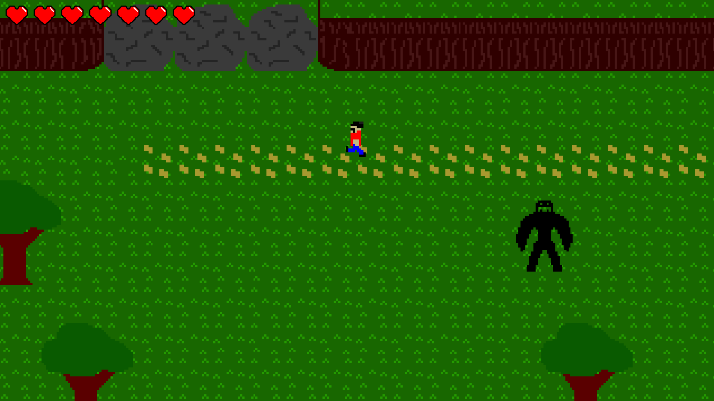
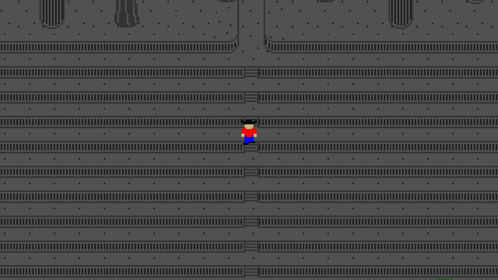
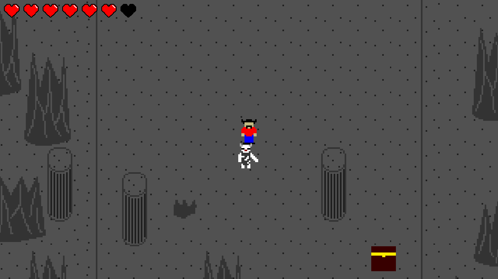
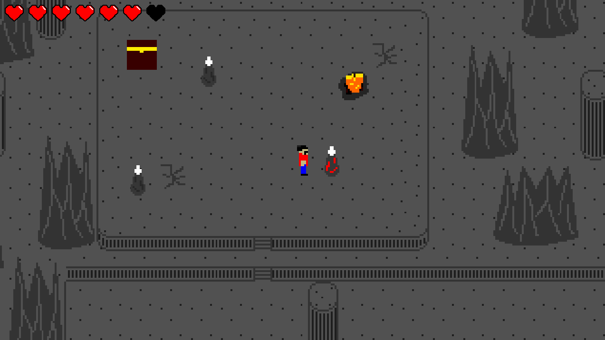
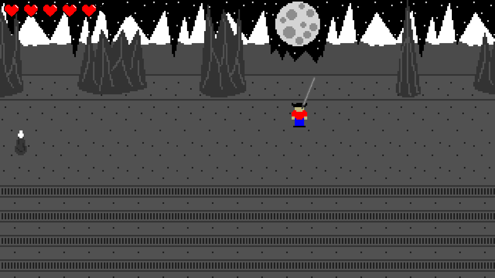
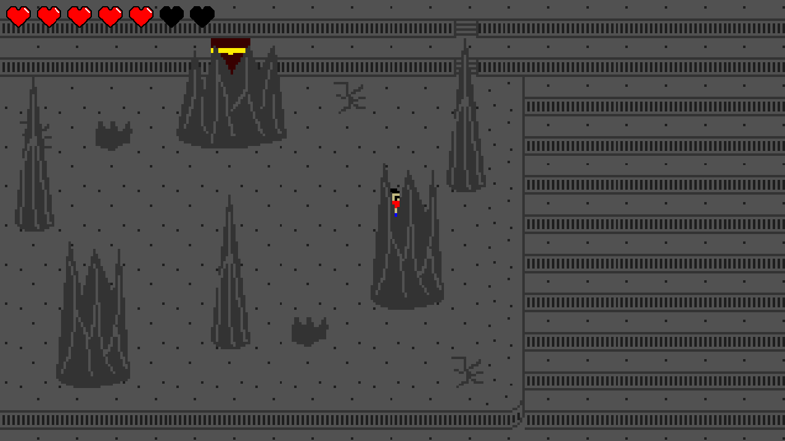
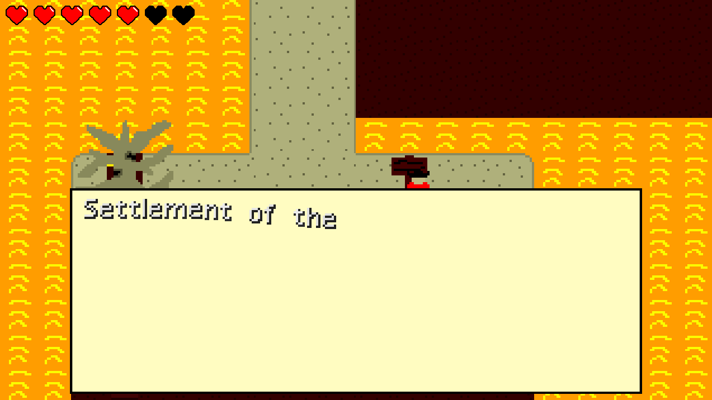

It's been quite awhile since the last time I showed the mountains region, so as such, here I am today. 6 Screenshots, each with something different.
This is the entrance to the mountains. It appears that some boulders block the way, and only a magical spell can remove them. What spot in the world could be able to possess such power to move 3 boulders heavier than the stone God himself cannot lift?
It's quite a climb up to the mountains, but that's just the next spot to go. An old settler from a settlement way before us carved some stairs. Luckily, they're still there, as they were maintained before King Nugget's rule as a vital trade route and passageway. How lucky.
Because of the rule of the current king of the Nuggetarian Empire, this side of the mountains are hardly upkept. All the way up to the ancient settlement, the path is not maintained. As such, some evolved Bulls can be found here, as the King's current rule has pushed them out of their natural habitats.
the mountains are also a natural habitat, just not for the aforementioned Bulls. These spike enemies have covered themselves in the rock from the ground and walls of the mountains themselves, in an attempt to protect their somewhat fragile insides. Despite this, their rocky shell is often fragile and subject to shattering on the slightest tap.
This is the area with the tallest points of the world. Of the three major islands, these are the highest natural points, such as this amazing view of the moon and stars, as well as more of the range.
You'll often come across these spikes. I wonder what could be hiding around them (other than me in this screenshot).
This is the settlement entrance itself. It's long been abandoned due to hostility from the Nuggetarian Empire, so who knows what you will find there. Given it's links to the sky, where the Great Ending potentially came from, who knows what could be lurking around in that settlement...